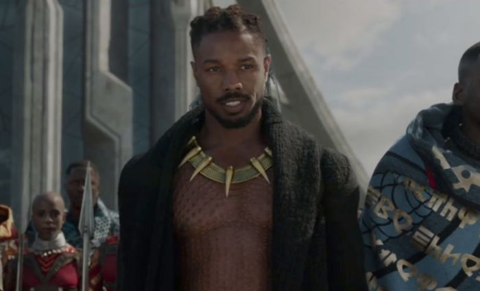
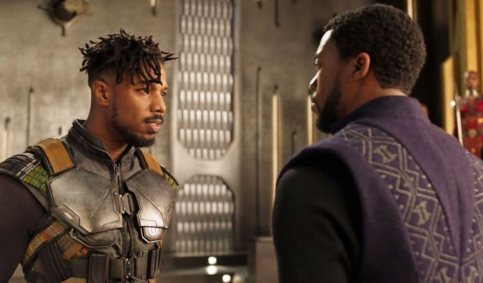

Michael B. Jordan Ingin Perankan Killmonger Lagi di Black Panther 2
By Yuni Usmanda / 28 Januari 2021
Lewat film Black Panther (2018), kita diperkenalkan dengan sosok villain Marvel baru yang diperankan oleh Michael B. Jordan, yaitu Erik Killmonger. Sayangnya, di akhir filmnya Killmonger dikisahkan tewas setelah bertarung dengan sengit melawan T’Challa (Chadwick Boseman). Meski begitu, belum lama ini Jordan justru mengungkapkan bahwa dia ingin kembali lagi sebagai Killmonger dalam sekuel filmnya mendatang.
Dilansir People, Michael B. Jordan mengungkapkan bahwa dia sangat bersedia untuk berperan kembali sebagai Killmonger dalam film Black Panther 2 mendatang. Hal ini karena dia kabarnya memiliki masa yang menyenangkan sewaktu melakukan proses produksi untuk film superhero yang tergabung di Marvel Cinematic Universe (MCU) tersebut.

Sekadar mengingatkan, sebelumnya memang sempat beredar rumor kalau Michael B. Jordan akan kembali dalam film Black Panther 2 mendatang. Sayangnya, belum diketahui karakter apa yang akan diperankan oleh Jordan dalam film sekuel tersebut mengingat tokoh yang dimainkannya sudah tewas. Namun, pernyataan Jordan di atas kemungkinan menjadi pertanda kalau dia akan kembali memerankan Killmonger.
Cara Killmonger dapat kembali di film tersebut pun ada beberapa cara. Salah satunya adalah mengandalkan konsep multiverse yang akan diperkenalkan lewat serial WandaVision serta film Doctor Strange 2 mendatang. Jadi, sosok Killmonger yang kembali diperankan oleh Jordan di Black Panther 2 mendatang bukanlah versi yang sudah tewas di film sebelumnya, melainkan dari semesta lain.

Sekadar informasi, film Black Panther 2 akan menjadi bagian dari fase keempat MCU dan rencananya akan dirilis di bioskop pada pada 8 Juli 2022. Sayangnya, hingga saat ini Marvel Studios belum mengumumkan siapa saja aktor yang akan ikut terlibat dalam proyek sekuel film superhero tersebut. Namun, sudah dapat dipastikan bahwa Ryan Coogler akan kembali terlibat sebagai sutradaranya.
Tetap Update Bersama Kami!
Subscribe Newslater NontonYuk! dan kamu akan mendapatkan
Info Film Paling Up to Date
Berita Terbaru Selebritis Favoritmu
Berkesempatan mendapatkan Give Away Tiket Film setiap bulannya!